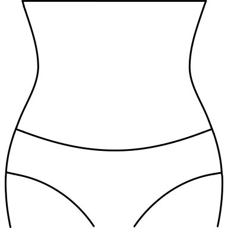
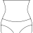
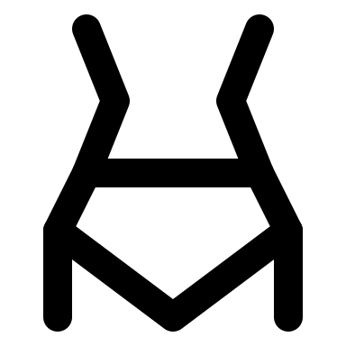
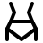
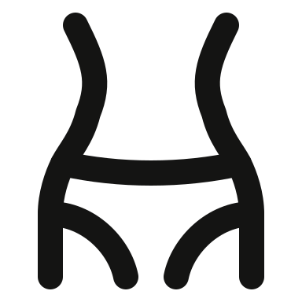
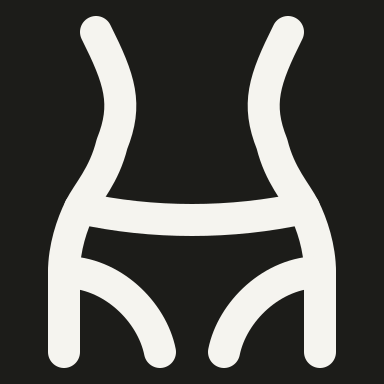

20 revisions · gpt-6 · model valid · full gate pass · zero warnings
1. solo/waist-wearing-briefs-batch-051


Original


Rejected

Fixed light

Fixed dark
The rejected waist had straight angular sides and a triangular crotch. Restore the curved waist, bowed waistband and two rounded leg openings from the original. No written feedback.
No essential features omitted; waistband and leg openings use mirrored curves.
The rejected continuous bust had a narrow straight neck and steep shoulders. Restore a circular head, smooth neck transitions and wide sloping shoulders in a single silhouette.
No separate facial details were present in the reference; continuous neck retained.
The rejected unicorn had a sideways spike, square back and fused rectangular legs. Restore a single upright horn, a curved back and rounded stepped hooves; distant legs omitted for clearance.
Distant legs, eye and mane detail omitted; one upright horn, muzzle, stepped hooves and tail retained.
The rejected commuter carried a tiny square case and raised a rigid horizontal arm. Widen the case, bend the carrying arm and angle the forward arm down as in the reference.
Case handle and seam reduced to the carrying-arm attachment; head, walking pose and wide case retained.
The rejected warrior pose had a very short torso and a nearly horizontal rear leg. Lengthen the torso and open a clear bent forward knee and diagonal straight rear leg.
Body thickness reduced to round-ended strokes; extended arms and bent front knee retained.
The rejected direction-pad controller lost its large upper oval window and moved the plus into that area. Restore the window above a separate lower direction pad.
Fine surface detail omitted; oval tracking window and distinct lower cross pad retained.
The rejected trigger controller replaced the oval tracking window with a bar and used an angular grip. Restore the open window and a smooth handle with a lower trigger mark.
Fine surface detail omitted; oval tracking window and lower trigger retained.
The rejected metal detector reduced the person to a ring over a cup. Restore a complete standing person with shoulders, torso and two legs inside a smooth portal. Omit the small top control and beep rays to give the person enough room.
Overhead control and beep rays omitted so a complete standing person fits inside the detector.
The rejected doll omitted the pin and made the head very flat. Restore a visible pin entering the left head edge and a rounder sewn head with two clear cross eyes. Keep an upright layout to retain both eyes at 48px; simplify the original diagonal pose.
Original diagonal pose made upright; pin head reduced to a shaft. Sewn head, cross eyes and four small limbs retained.
The rejected infinity had very tall narrow loops. Restore broad horizontal mirrored bowls and a smooth central crossover, using the radial envelope to preserve its natural proportions.
No features omitted; radial keyshape preserves the horizontal infinity proportions.
The rejected gamepad had no controls and vibration bars above and below. Restore a central direction pad, rounded paired grips and vibration marks beside the controller.
Secondary button and doubled vibration arcs reduced to a central cross pad and one vertical vibration mark on each side.
The rejected profile-selection mark lost its hair division. Restore a broad swept hairline within the open round head and keep the pointer lower right.